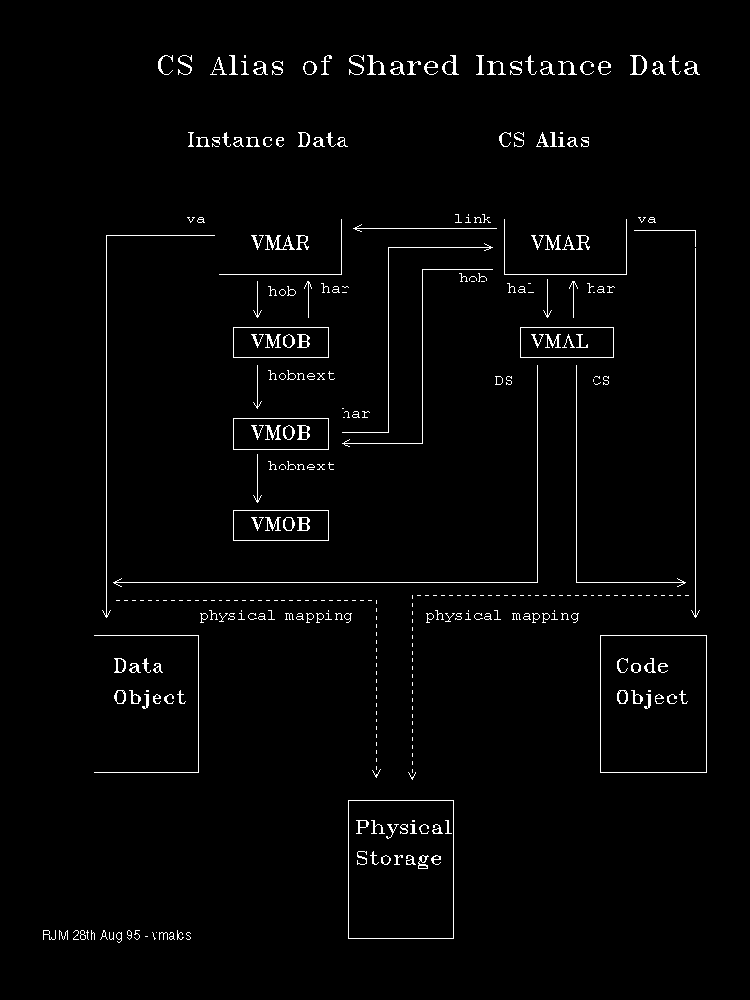
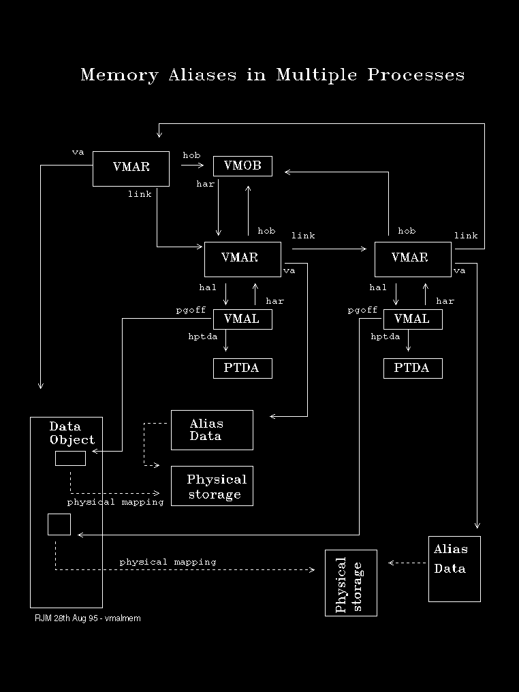

The situation described thus far can be further complicated by a technique known as aliasing. This is where one or more pages of an object may be mapped by page table manipulation to one or more pages of another object. In effect, this is partial object sharing.
This can occur between processes or within a process and is usually done for the following reasons:
A device driver needs to create an I/O buffer to receive data at interrupt time and therefore in any context. The application that called the device driver also needs to have access to the results. This is commonly solved by the device driver making a UVIRT allocation in the system arena which aliases an application data buffer.
A debugging application needs to access or even modify data and code of the debugee. This is achieved through CS and DS selector aliasing.
A Dos Virtual Machine needs to simulate the A20 line wrap-around. Storage addressed above the A20 line aliases to addresses module 2**20.
A Dos Virtual Machine's Private Arena address space is aliased in the system arena so that it may be accessed by Virtual Device Drivers in a context other than that of the VDM. The VDM handle (HVMD) is the alias address, which the VDD may add to any Private Arena Address to obtain a context independent access to a location in a given VDM.
These situations require the introduction of another memory management control block: the Alias Record (VMAL). Each VMAL has a unique handle or hal, which is the table entry from which the VMAL is allocated.
Where aliasing occurs, the handle to the alias record (hal) is saved in the VMAR of the aliasing address range.
In the case of memory aliasing the VMAL contains the handle to the PTDA of the aliasing process.
In the case of CS/DS aliasing within a process the VMAL contains the CS selector.
The link field of the VMAR is used to link together aliasing and aliased address ranges.
Alias records may be formatted using the .ML command as shown in the following example:
##.ml hal=0001 pal=%fc5de020 har=00af hptda=00ae pgoff=00000 f=001 hal=0002 pal=%fc5de028 har=00b0 hptda=00ae pgoff=00000 f=001 hal=0003 pal=%fc5de030 har=007a hptda=00ae pgoff=00000 f=001 hal=0004 pal=%fc5de038 har=0160 cs=00e6 ds=d446 cref=001 f=13 hal=0005 pal=%fc5de040 har=017f hptda=00ae pgoff=00000 f=001 hal=0006 pal=%fc5de048 har=0197 hptda=00ae pgoff=00000 f=021 hal=0007 pal=%fc5de050 har=0198 hptda=00ae pgoff=00000 f=021 hal=0008 pal=%fc5de058 har=0199 hptda=00ae pgoff=00000 f=021 hal=0009 pal=%fc5de060 har=01c8 hptda=00ae pgoff=00000 f=001 hal=000a pal=%fc5de068 har=01db cs=0056 ds=d446 cref=001 f=13 hal=000b pal=%fc5de070 har=020b cs=0056 ds=d446 cref=001 f=13 hal=000c pal=%fc5de078 har=0242 cs=0056 ds=d446 cref=001 f=13 ##
CS Aliasing is depicted in the following diagram:
The following diagram depicts multiple process memory aliasing: